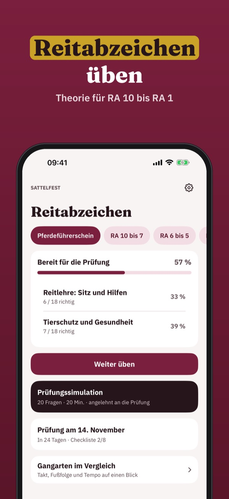
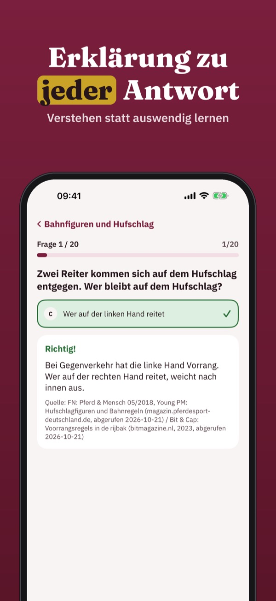
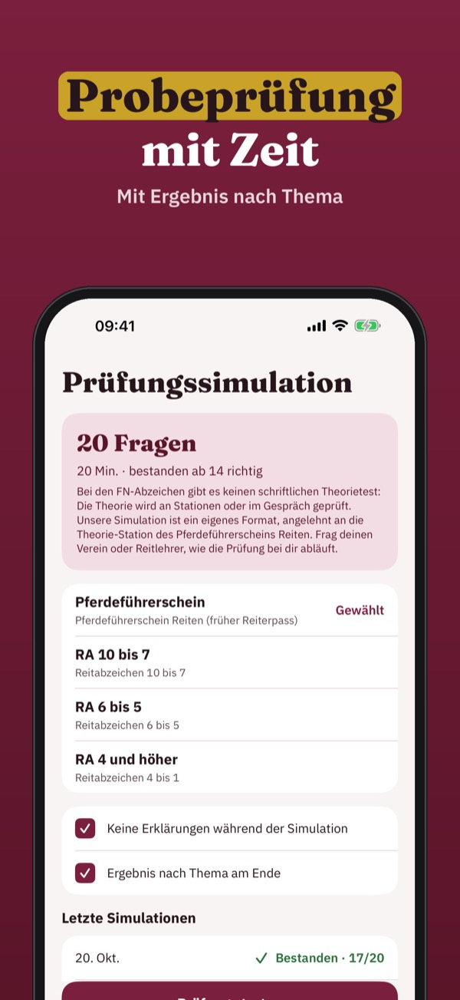
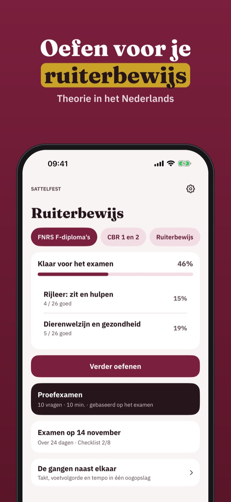
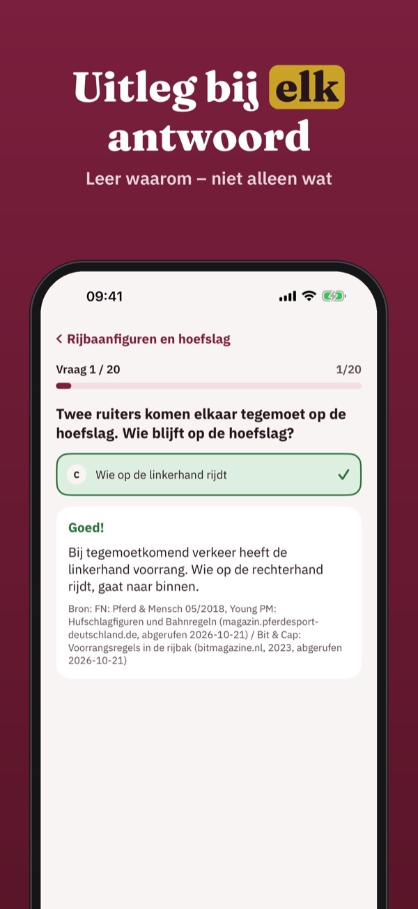
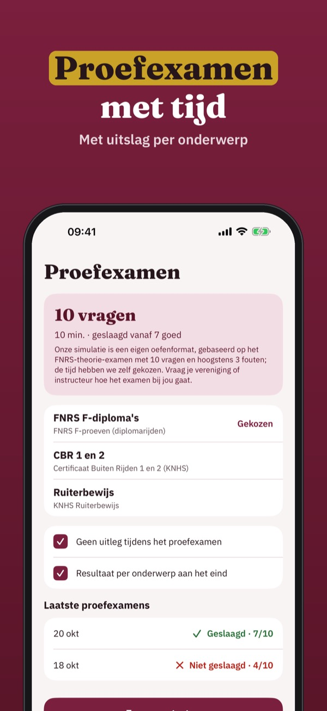
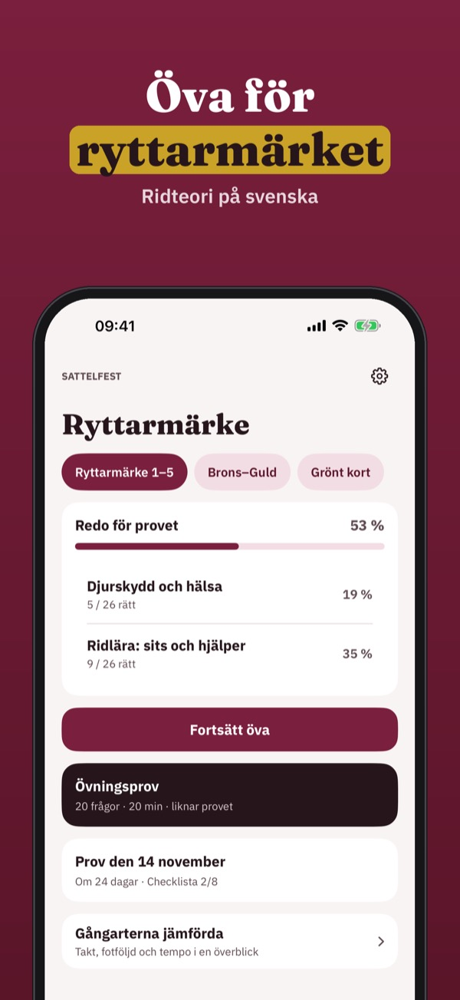
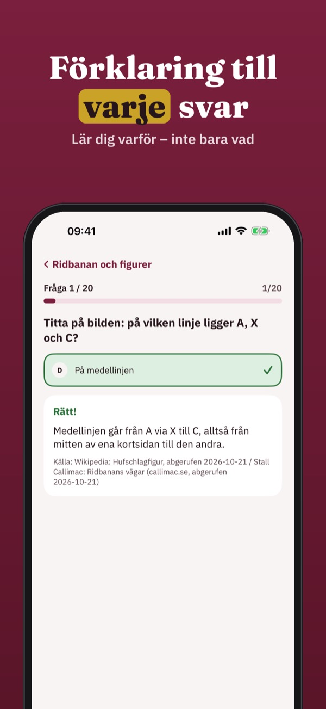
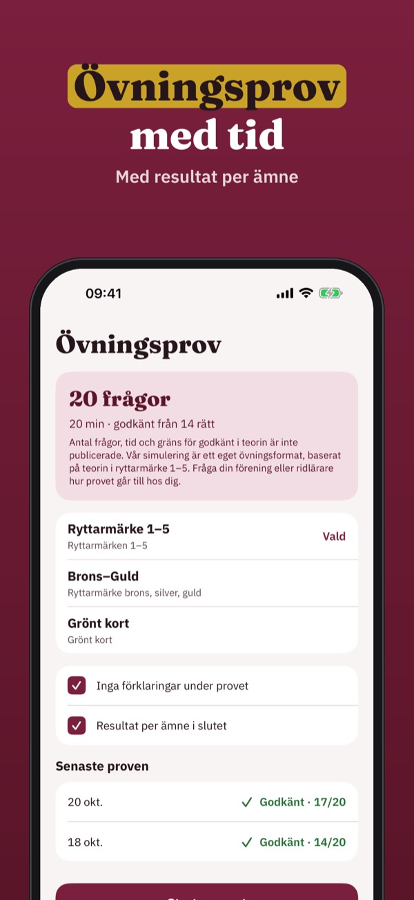

Theorie für Reiterpass und RA
Übe die Theorie für Reitabzeichen und Reiterpass: Fragen mit Erklärung, Prüfungssimulation und Gangarten im Vergleich – auf Deutsch und offline.



Sattelfest hilft dir, die Theorie für Reitabzeichen, Reiterpass und das Schweizer Reitbrevet zu üben – von der Pferdepflege bis zu den Bahnregeln.
20 Fragen, die Begriffe und die Checkliste kannst du ohne Kauf nutzen. Die Vollversion ist ein Einmalkauf und schaltet alle Fragen, Simulationen und die Statistik frei. Kein Abo.
Sattelfest ist unabhängig und nicht mit FN, OEPS, SVPS oder einem Reitverband verbunden. Die Prüfung legst du im Verein oder Reitstall ab.
Terms of Use (EULA): https://www.apple.com/legal/internet-services/itunes/dev/stdeula/
Privacy: https://baytechbv.github.io/privacy/reitabzeichen-eu/
Paardrijtheorie oefenen
Oefen de theorie voor je ruiterbewijs: vragen met uitleg, proefexamens en de gangen naast elkaar – in het Nederlands en zonder internet.



Sattelfest helpt je de paardrijtheorie te oefenen – van verzorging en voeding tot de regels in de rijbaan.
Je kunt 20 vragen, de begrippenlijst en de checklist zonder aankoop gebruiken. De volledige versie is een eenmalige aankoop die alle vragen, proefexamens en statistiek ontgrendelt. Geen abonnement.
Sattelfest is onafhankelijk en niet verbonden aan de KNHS, de FNRS of een andere ruitersportbond. Je examen doe je bij je manege of vereniging.
Terms of Use (EULA): https://www.apple.com/legal/internet-services/itunes/dev/stdeula/
Privacy: https://baytechbv.github.io/privacy/reitabzeichen-eu/
Ridteori och övningsprov
Öva teorin för ryttarmärket: frågor med förklaring, övningsprov och gångarterna sida vid sida – på svenska och utan internet.



Sattelfest hjälper dig att öva ridteorin – från hästskötsel och utrustning till reglerna på ridbanan.
Du kan öva 20 frågor, ordlistan och checklistan utan köp. Fullversionen är ett engångsköp som låser upp alla frågor, övningsprov och statistik. Ingen prenumeration.
Sattelfest är fristående och inte kopplat till Svenska Ridsportförbundet eller någon ridskola. Provet gör du på din ridskola eller klubb.
Terms of Use (EULA): https://www.apple.com/legal/internet-services/itunes/dev/stdeula/
Privacy: https://baytechbv.github.io/privacy/reitabzeichen-eu/